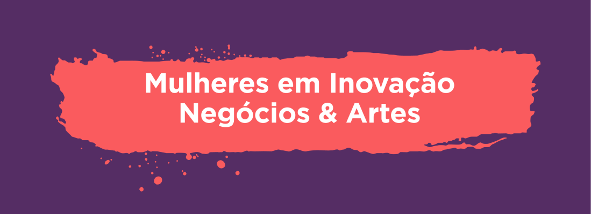

O M.I.N.As é uma iniciativa do Porto Digital que tem como propósito fortalecer a entrada e permanência de meninas e mulheres no Ecossistema de Inovação de Pernambuco. O programa de equidade de gênero vem para desmistificar a ideia ultrapassada de que tecnologia não é para mulher.
Para ficar por dentro de mais ações como essa, nos acompanhe também em nossas redes sociais. ;)
Instagram Porto Digital M.I.N.As
Para mais inforações sobre o programa acesse o site do Porto Digital.